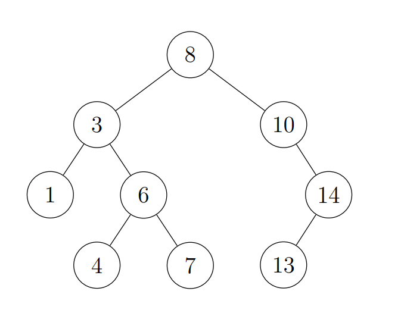

进阶数据结构1
前置知识
基本方法:
- 前缀和
- 差分
- 离散化
- 离线
- 二分
- 倍增
- 双指针
- 永久记忆化
基本数据结构:
-
线段树
-
树状数组
-
表
-
单调队列
-
单调栈
-
并查集
树上问题基本方法
- 求
- 序
- 链差分
线段树
线段树就是对一个序列递归地取中点分成两部分形成的分治树。任何以单点为基本单位的分治树都可以适配任意区间，而取中点分治保证了树高为。合并所有被完整包含的极大区间即可得到目标区间。
树状数组
将序列长度扩充成的幂，建线段树，自底向上将每个节点的右儿子删除，这样会剩下个节点。可以用一个数组来存储，其中下标存储包含 的最小节点，这个数组就称为树状数组。
树状数组的英文名为 或 ， 可以缩写为 。
对于一个线段树支持的操作，如果可以不用任何作为右儿子的节点，就可以用树状数组实现。
大多数情况下，无论是代码实现难度还是运行效率，树状数组都有碾压性的优势。
差分
-
区间加一个数, 查询单点
-
区间加一个数, 查询单点和
-
区间加等差数列, 查询单点
双指针
用两个指针扫描, 扫描过程中保持两个指针的距离不超过一个定值
单调队列
维护一个序列，支持以下操作：
-
在后面插入元素；
-
删除最前面的元素；
-
求序列中元素的最小值。
插入元素时，队尾的更大的元素不会再产生贡献，可以直接删去。这样队列中实际存在的元素单调递减。
常结合双指针使用。
单调栈
将序列中的元素依次插入一个栈，若栈顶元素更小，则它的答案已经可以确定，从而可以弹出。这样栈中的元素单调递减。
并查集
用来维护不相交集合。可以缩写为。
通常只使用路径压缩策略。即使只压缩一半的路径，均摊复杂度仍然是。
另有带权并查集，维护点权差的传递。可以利用取模后的权值差来分类。
注：所谓的 实际上是树的链分治，和 并 没有任何关系，因此这个称呼并不合理。
平衡树相关
##二叉搜索树
每个节点有一个关键字，每个节点的关键字均不小于左子树中任何节点的关键字，且均不大于右子树中任何节点的关键字，或者说按树的中序遍历排列这些关键字得到的数列单调不降。
二叉搜索树的英文为 ，可缩写为 。

平衡树
平衡树全称平衡二叉搜索树，是深度为 的二叉搜 索树。
平衡树有很多种，学会 和 就够用了，当然有兴趣可以多学，虽然没啥用。
在普通 的基础上，每个节点随机分配一个权值，调整树的形态使得这些权值满足堆性质。
可以证明任何时候树的期望深度为 。
名称来自 ，故又称树堆。
权值线段树
设 为 的出现次数，建线段树维护 的前缀和。由于 的下标是权值，这样的线段树常称为权值线段树。
线段树上二分
二分的过程可以视为在分治树上自顶向下移动，既然线段树是分治树，那么自然可以直接在线段树上移动。
动态开店线段树
最开始没有点，不建树，当修改操作用到了不存在的点时 再创建这个点。如果查询操作用到了不存在的点，可以直 接算出相应的答案。
适用于无法离散化的情况。
每次操作后都通过某种方法旋转，使最后一个被访问的节点成为根节点。
可以证明 次操作的总复杂度为 ，即一次操作 的均摊复杂度为 ，但某一次操作的复杂度可能达到 。
可直译为伸展树。
##
可以实现分裂与合并，只要在过程中维护堆性质，复杂度并不会改变。插入和删除都可以通过分裂与合并来实 现，这样就不再需要旋转过程。
反转操作
把对应的区间分裂出来, 反转左右子树即可
最大子段和
合并两个区间的最值区间信息时，只有两种情况：
最值区间位于某一个区间；
最值区间横跨两个区间。
只需要维护前后缀信息，就可以计算第二种情况。
对比
通常情况下，常数：。
- 常用于维护有序表；
- 维护有序表效率低，而且实现不方便；
- 常用于 或维护序列；
- 无旋 也可以维护序列，便于实现可持久化，但效率较低。
高维问题
##维度组成
-
如果对操作的位置有限制，问题就有位置轴。
-
如果对操作的权值有限制，问题就有权值轴。
-
如果对操作的顺序有要求，问题就有时间轴。
位置轴和权值轴并没有本质区别。
权值线段树只是指明了维护的是权值轴，和维护位置轴的线段树并没有本质区别。
时间轴变换
将某一轴视为时间轴，按时间顺序插入，从而将前缀查询转化为某个时间点的查询。
离线扫描
将所有询问和数据集合一起按新的时间轴排序。
分治树
维护某一维数据的基本方法是使用分治树。
通常所说的数据结构是显式的分治树，包括线段树和平衡 树；通常所说的分治使用隐式的分治树。
CDQ分治
通过分治维护时间维。
通常的 CDQ 分治只查询时间前缀，也可以做到查询时间区间，实现比较繁琐。
##整体二分
用分治维护需要二分的维度，在分治树上二分。
分治树的组合
- 树状数组套平衡树：空间 ，效率一般
- 树状数组套线段树：空间 ，效率一般，各线段树可以同时二分
- 线段树套树：支持不可减外层信息分治套树状数组：离线，空间 ，效率很高，可以在隐式分治树上二分
- 分治套线段树：离线，空间 ，效率较高，支持较复杂的操作
- 树状数组套压缩 ：空间 ，实现难度较大
- “重量”平衡树套树：支持外层插入，实现难度较大
维护 维空间矩形信息的复杂度为 ，空间 ， 且支持高维标记，但是不能剪枝时常数巨大。
根号大法好
莫队
将序列分块，将询问按左端点所在块为第一关键字、右端点为第二关键字排序。依次处理询问，维护一个初始为空的区间，每次将维护的区间按需插入或删除若干元素，得到当前的询问区间。
设块大小为 。维护的区间的左端点的移动不超过 ， 右端点的移动不超过 ，取 得最优复杂度 。
有时无法进行删除操作，这时可以只从某个块的左端点开 始维护区间，移动右端点并在右端插入相应的元素。移动到每个询问的右端点时，将左端未插入的元素插入，得到答案后再撤销左端的插入。
这样就不用进行删除操作，但是至少要支持从两端插入。
简单操作
或
- 序列单点修改，区间和
- 序列区间加，查询单点
- 集合插入，查询 小